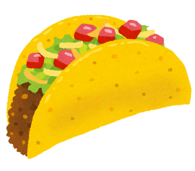

Taco Recipe
Home

Description
Tacos are a traditional Mexican dish where a tortilla is folded around a filling of meat.
Many additional toppings such as onions, cilantro, salsa, etc., are often used. The tortilla can be either corn or wheat, and can be served fried or soft.
Ingredients
- Tortilla (your choice):
- Filling (your choice):
- Ground beef
- Chicken
- Fish
- Pork
- Seasoning
- Toppings (your choice):
- Lettuce or cabbage
- Tomatoes
- Onions
- Cheese
- Sour cream
- Salsa
- Jalapeños
- Cilantro
Steps
- Cook meat
- Add seasoning to meat
- Wash vegetables if you are using any
- Prepare toppings
- Prepare tortillas
- Corn: heat up or fry
- Flour: cook on pan
- Apply meat to tortilla
- Apply toppings to meat
- Fold tortilla
- Consume
Home